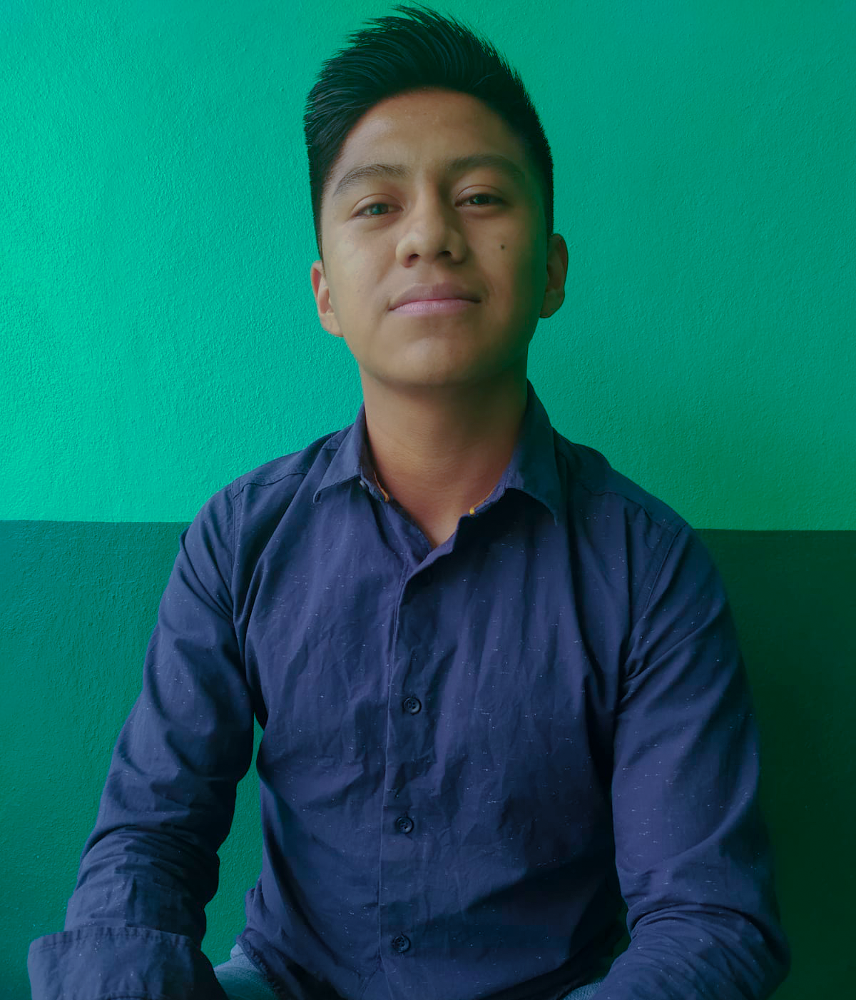
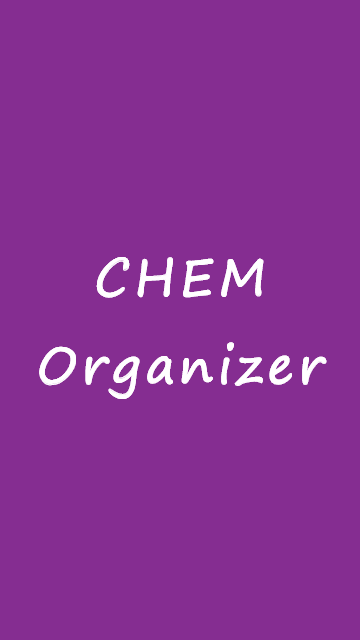
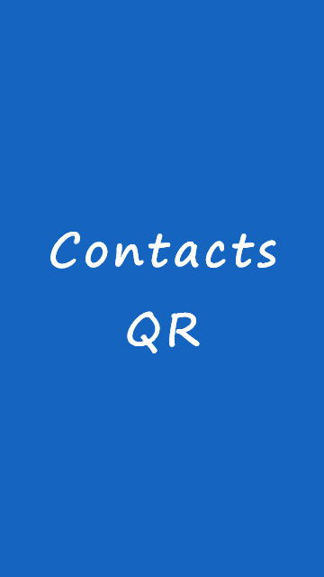
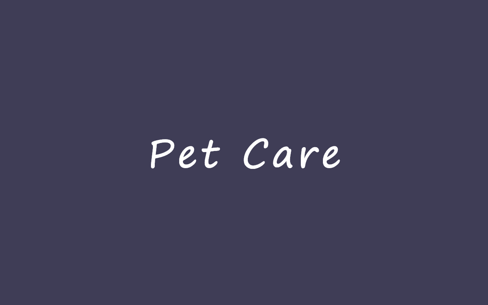
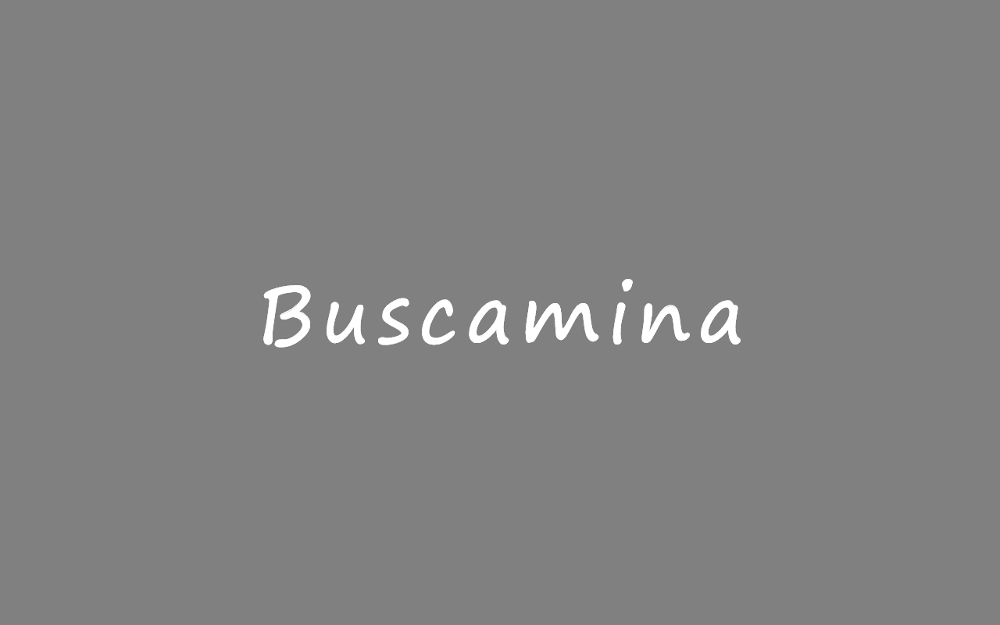
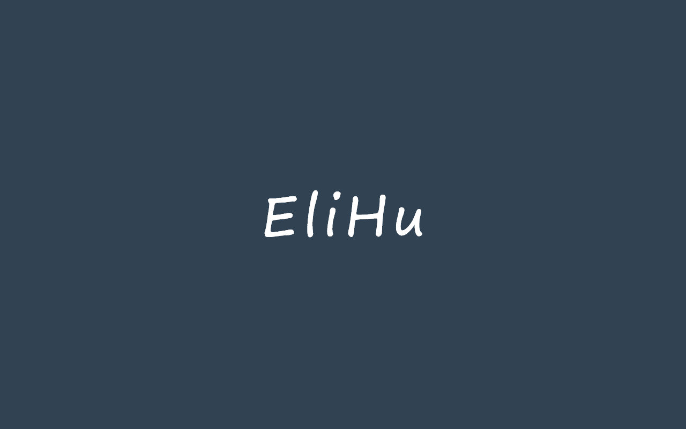
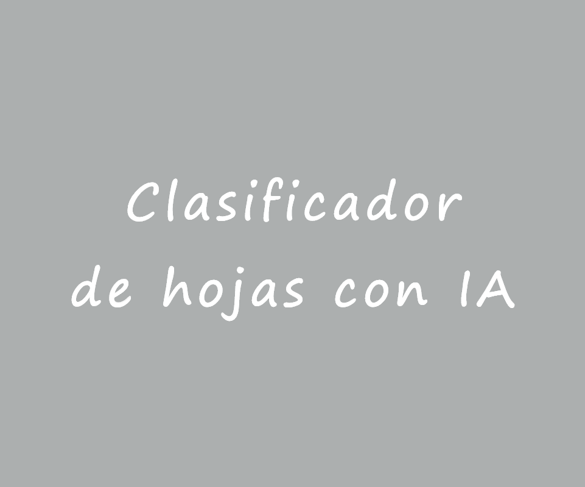
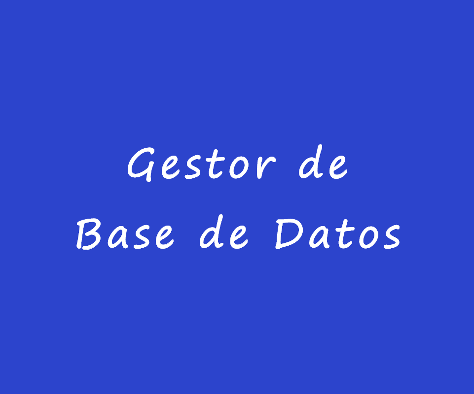

Proyectos

Aplicación móvil de tipo agenda para registrar tareas y recibir recordatorios
Revisar proyecto

Aplicación móvil para registrar y compartir contactos por código QR
Revisar proyecto

Aplicación web para la administración de una veterinaria y aplicación móvil para ver el listado de productos
Revisar proyecto

Juego de buscaminas, logra una victoria despejando el campo sin tocar ninguna mina
Revisar proyecto

EliHu es un programa que realiza la labor de un intérprete, lleva a cabo ciertas acciones como un lenguaje de programación
Revisar proyecto

Programa con Inteligencia Artificial que permite clasificar hojas
Revisar proyecto
Sistema para el rastreo de un objeto, visualizado en un mapa
Revisar proyecto

Aplicación de escritorio para la gestión de bases de datos
Revisar proyecto